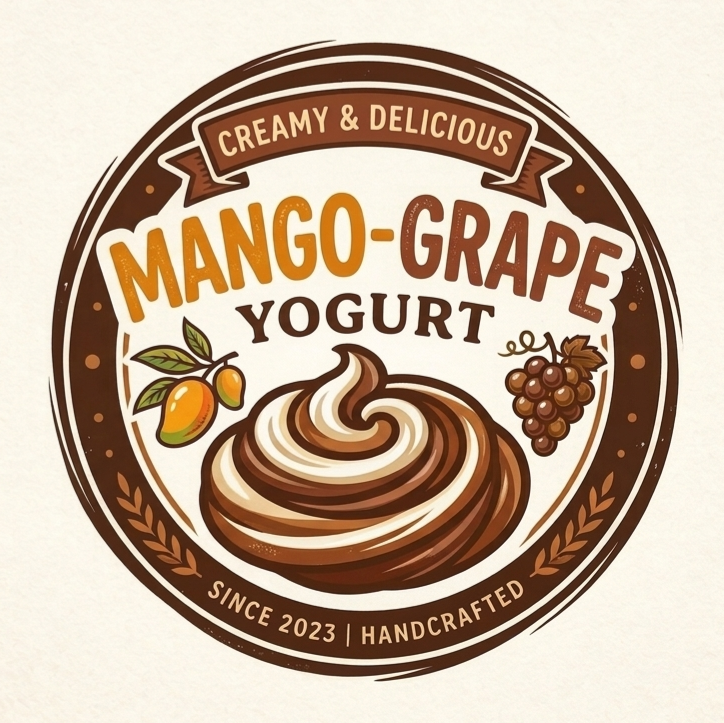
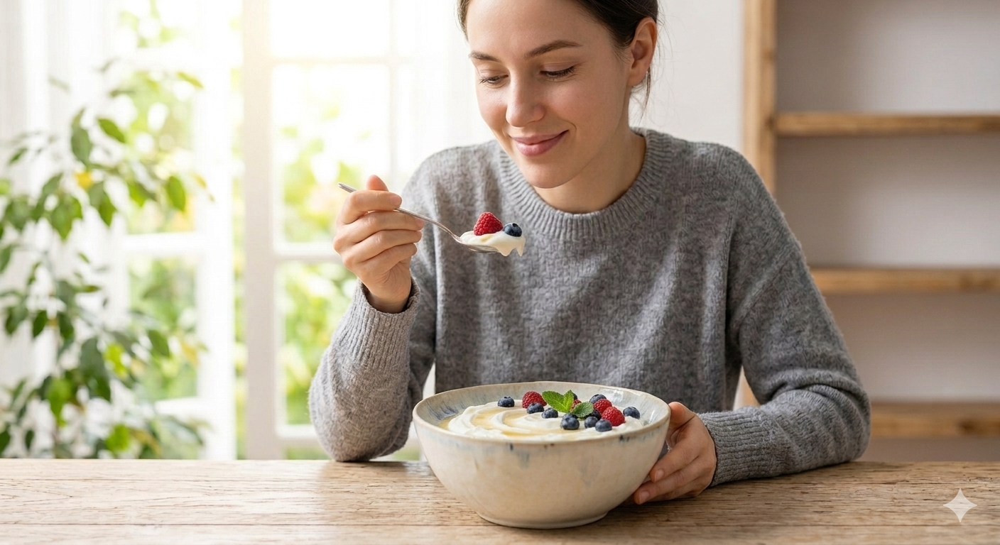
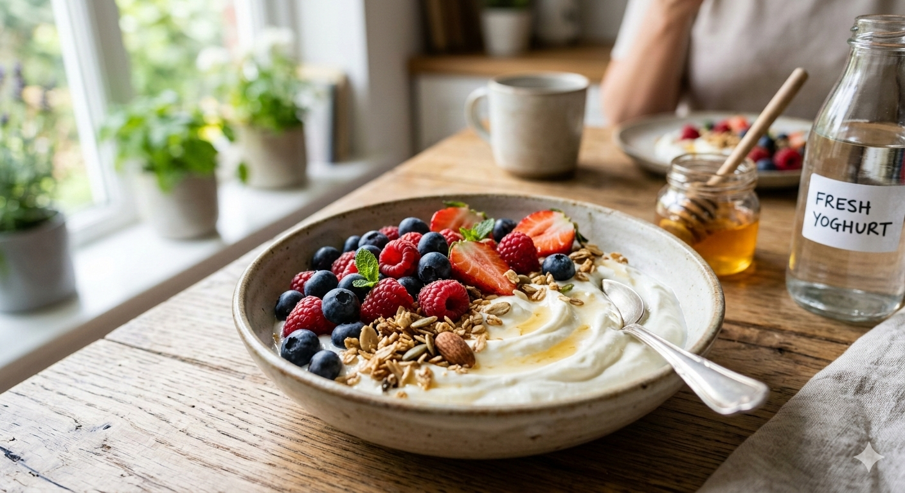
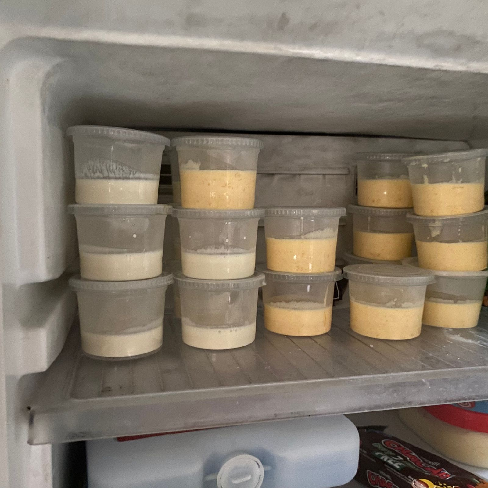

Yoghurt merupakan produk pangan fungsional hasil fermentasi susu yang memanfaatkan aktivitas sinergis bakteri asam laktat seperti Lactobacillus bulgaricus dan Streptococcus thermophilus, namun profil rasa plain yang cenderung sangat asam serta tekstur yang monoton sering kali menjadi hambatan dalam daya terima konsumen secara luas. Proyek inovasi ini hadir untuk menjawab tantangan tersebut dengan mengintegrasikan ekstrak buah mangga dan anggur, yang tidak hanya berperan sebagai pemberi rasa dan pemanis alami untuk menyeimbangkan keasaman, tetapi juga berfungsi sebagai fortifikasi nutrisi guna meningkatkan kadar antioksidan, vitamin, dan serat pangan dalam produk. Lebih jauh lagi, penambahan komponen bioaktif dari kedua buah ini secara signifikan akan memengaruhi parameter fisikokimia yoghurt, mulai dari stabilitas viskositas dan tekstur gel agar lebih lembut, hingga optimalisasi aktivitas metabolisme bakteri fermentan, sehingga dihasilkan produk olahan susu yang lebih sehat, memiliki nilai organoleptik yang unggul, dan relevan dengan tren kebutuhan pangan modern yang bersifat preventif bagi kesehatan. Learn more


Penelitian ini dirancang untuk menganalisis dan membandingkan karakteristik fisik serta kimiawi dari yoghurt yang diproduksi melalui fortifikasi dua jenis ekstrak buah, yaitu mangga dan anggur. Fokus utama dari proyek ini adalah untuk mengevaluasi secara mendalam bagaimana perbedaan profil nutrisi, tingkat keasaman, dan kandungan serat alami dari masing-masing buah memengaruhi parameter kualitas produk pasca-fermentasi. Melalui pendekatan ini, peneliti berupaya memetakan stabilitas tekstur, perubahan nilai pH, hingga kapasitas antioksidan yang dihasilkan dari interaksi antara ekstrak buah dengan bakteri asam laktat. Selain aspek teknis, studi ini juga bertujuan untuk memahami potensi sinergi antara senyawa bioaktif buah dalam meningkatkan nilai fungsional yoghurt sebagai pangan kesehatan. Hasil penelitian diharapkan dapat memberikan landasan ilmiah yang kuat dalam pengembangan inovasi produk susu fermentasi berbasis buah-buahan lokal maupun global.
1.Tuangkan 1 liter susu ke dalam panci.
2.Panaskan susu hingga mencapai suhu sekitar 80℃.
3.Matikan api dan diamkan susu hingga suhunya turun menjadi sekitar 45℃.
4.Ambil 1 1/2 sendok makan yoghurt, lalu campurkan dengan susu yang sudah hangat di wadah terpisah.
5.Aduk rata, kemudian tuangkan kembali campuran tersebut ke dalam panci berisi sisa susu dan aduk kembali hingga merata.
6.Masukkan susu yang sudah tercampur ke dalam teko kaca, Tutup teko kaca dengan rapat.
7.Bungkus seluruh bagian atas menggunakan kain agar hangatnya terjaga. Simpat di tempat yang tertutup seperti di dalam oven yang mati atau lemari kayu.
8.Setelah didiamkan, yoghurt akan mengental. Jika terdapat cairan bening di bagian atas, jangan dibuang karena bisa dimanfaatkan untuk hal lain.
9.Pindahkan yoghurt ke wadah penyimpanan.
10.Kupas mangga matang , potong dadu kecil-kecil dengan pisau yang tajam, lalu haluskan dengan blender jika ingin tekstur menjadi smooth.
11.Sebaliknya cuci bersih anggur, potong menjadi dua atau empat bagian , dan buang bijinya.
12.Jika kulitnya tebal, bisa mengupasnya terlebih dahulu.
13.Lalu campurkan mangga dan atau anggur yang sudah dihaluskan langsung masukkan ke dalam yoghurt yang sudah terpisah di 2 mangkok kecil, setelah itu aduk rata dan yoghurt siap dinikmati.
